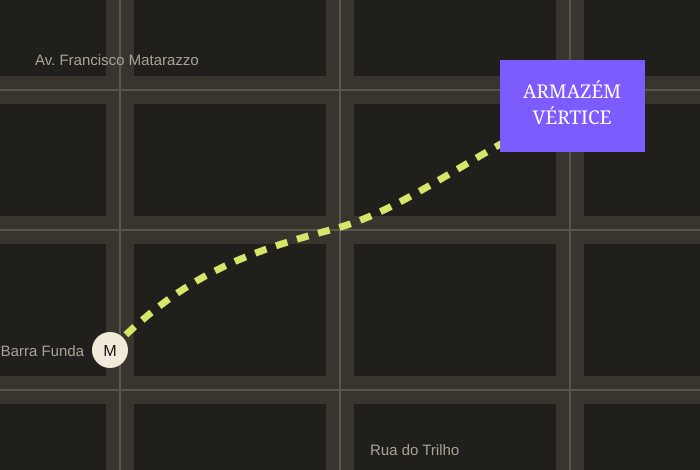

Antes de chegar
Informações
Endereço, como chegar e o que pode ou não entrar no festival.
Endereço
Armazém Vértice
Rua do Trilho, 180
Barra Funda, São Paulo - SP
Como chegar
Metrô e trem
Desça na Estação Palmeiras-Barra Funda e caminhe aproximadamente 12 minutos até o local.
Ônibus
Linhas que passam pela Avenida Francisco Matarazzo têm pontos próximos ao festival.
Carro
Não há estacionamento oficial. Recomendamos transporte público ou aplicativo.

Regras
O que levar
- Documento de identificação
- Ingresso digital
- Garrafa de água vazia
- Capa de chuva
- Mochila pequena
Atenção
O que não levar
- Objetos cortantes
- Garrafas de vidro
- Armas ou objetos perigosos
- Caixas de som
- Materiais inflamáveis